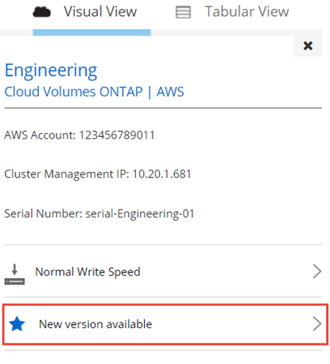
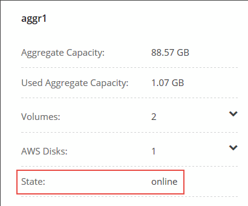

Go to the docs for the latest release.
Updating Cloud Volumes ONTAP software
Contributors
 Download PDF of this page
Download PDF of this page
Cloud Manager includes several options that you can use to upgrade to the current Cloud Volumes ONTAP release or to downgrade Cloud Volumes ONTAP to an earlier release. You should prepare Cloud Volumes ONTAP systems before you upgrade or downgrade the software.
Overview
Cloud Manager displays a notification in Cloud Volumes ONTAP working environments when a new version of Cloud Volumes ONTAP is available:

You can start the upgrade process from this notification, which automates the process by obtaining the software image from an S3 bucket, installing the image, and then restarting the system.
|
Upgrades of HA pairs are nondisruptive—HA pairs continue to serve data during the upgrade process. Cloud Manager might upgrade the HA mediator as part of this process. |
Advanced options for software updates
Cloud Manager also provides the following advanced options for updating Cloud Volumes ONTAP software:
-
Software updates using an image on an external URL
This option is helpful if Cloud Manager cannot access the S3 bucket to upgrade the software, if you were provided with a patch, or if you want to downgrade the software to a specific version.
-
Software updates using the alternate image on the system
You can use this option to downgrade to the previous version by making the alternate software image the default image. This option is not available for HA pairs.
Transitioning Cloud Volumes ONTAP to an earlier release in the same release family (for example, 9.3 to 9.2) is referred to as a downgrade. You can downgrade without assistance when downgrading new or test clusters, but you should contact technical support if you want to downgrade a production cluster.
Preparing to update Cloud Volumes ONTAP software
Before performing an upgrade or downgrade, you must verify that your systems are ready and make any required configuration changes.
Suspending SnapMirror transfers
If a Cloud Volumes ONTAP system has active SnapMirror relationships, it is best to suspend transfers before you update the Cloud Volumes ONTAP software. Suspending the transfers prevents SnapMirror failures. You must suspend the transfers from the destination system.
These steps describe how to use System Manager for version 9.3 and later.
-
Log in to System Manager from the destination system.
-
Click Protection > Relationships.
-
Select the relationship and click Operations > Quiesce.
Verifying that aggregates are online
Aggregates for Cloud Volumes ONTAP must be online before you update the software. Aggregates should be online in most configurations, but if they are not, then you should bring them online.
These steps describe how to use System Manager for version 9.3 and later.
-
In the working environment, click the menu icon, and then click Advanced > Advanced allocation.
-
Select an aggregate, click Info, and then verify that the state is online.

-
If the aggregate is offline, use System Manager to bring the aggregate online:
-
Click Storage > Aggregates & Disks > Aggregates.
-
Select the aggregate, and then click More Actions > Status > Online.
Upgrading Cloud Volumes ONTAP to the latest version
You can upgrade to the latest version of Cloud Volumes ONTAP directly from Cloud Manager. Cloud Manager notifies you when a new version is available.
Cloud Manager operations such as volume or aggregate creation must not be in progress for the Cloud Volumes ONTAP system.
The upgrade process takes up to 25 minutes for a single Cloud Volumes ONTAP system and up to 90 minutes for an HA pair. Upgrades of HA pairs are nondisruptive. HA pairs continue to serve data during the upgrade process.
-
Click Working Environments.
-
Select a working environment.
A notification appears in the right pane if a new version is available:
-
If a new version is available, click Upgrade.
-
In the Release Information page, click the link to read the Release Notes for the specified version, and then select the I have read… check box.
-
In the End User License Agreement (EULA) page, read the EULA, and then select I read and approve the EULA.
-
In the Review and Approve page, read the important notes, select I understand…, and then click Go.
Cloud Manager starts the software upgrade. You can perform actions on the working environment once the software update is complete.
If you suspended SnapMirror transfers, use System Manager to resume the transfers.
Upgrading or downgrading Cloud Volumes ONTAP by using an HTTP or FTP server
You can place the Cloud Volumes ONTAP software image on an HTTP or FTP server and then initiate the software update from Cloud Manager. You might use this option if Cloud Manager cannot access the S3 bucket to upgrade the software or if you want to downgrade the software.
This upgrade or downgrade process takes up to 25 minutes for a single Cloud Volumes ONTAP system and up to 90 minutes for an HA pair. Upgrades and downgrades of HA pairs are nondisruptive. HA pairs continue to serve data during the process.
-
Set up an HTTP server or FTP server that can host the Cloud Volumes ONTAP software image.
-
If you have a VPN connection to the VPC, you can place the Cloud Volumes ONTAP software image on an HTTP server or FTP server in your own network. Otherwise, you must place the file on an HTTP server or FTP server in AWS.
-
If you use your own security group for Cloud Volumes ONTAP, ensure that the outbound rules allow HTTP or FTP connections so Cloud Volumes ONTAP can access the software image.
The predefined Cloud Volumes ONTAP security group allows outbound HTTP and FTP connections by default. -
Obtain the software image from NetApp Downloads: Software.
-
Copy the software image to the directory on the HTTP or FTP server from which the file will be served.
-
From the working environment in Cloud Manager, click the menu icon, and then click Advanced > Update Cloud Volumes ONTAP.
-
On the update software page, choose Select an image available from a URL, enter the URL, and then click Change Image.
-
Click Proceed to confirm.
Cloud Manager starts the software update. You can perform actions on the working environment once the software update is complete.
If you suspended SnapMirror transfers, use System Manager to resume the transfers.
Downgrading Cloud Volumes ONTAP by using a local image
Each Cloud Volumes ONTAP system can hold two software images: the current image that is running, and an alternate image that you can boot. Cloud Manager can change the alternate image to be the default image. You can use this option to downgrade to the previous version of Cloud Volumes ONTAP, if you are experiencing issues with the current image.
This downgrade process is available for single Cloud Volumes ONTAP systems only. It is not available for HA pairs. The process takes the Cloud Volumes ONTAP system offline for up to 25 minutes.
-
From the working environment, click the menu icon, and then click Advanced > Update Cloud Volumes ONTAP.
-
On the update software page, select the alternate image, and then click Change Image.
-
Click Proceed to confirm.
Cloud Manager starts the software update. You can perform actions on the working environment once the software update is complete.
If you suspended SnapMirror transfers, use System Manager to resume the transfers.
 Edit on GitHub
Edit on GitHub